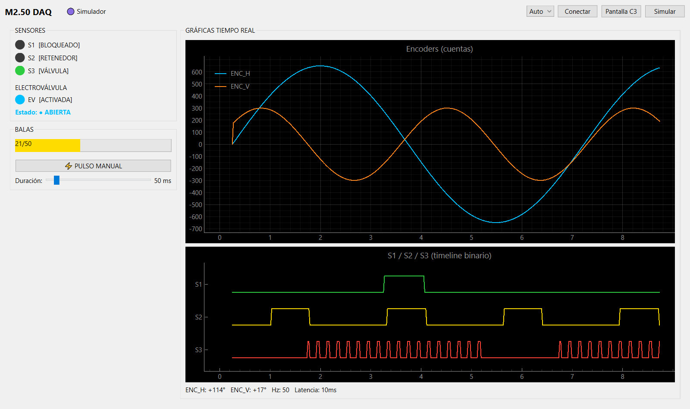
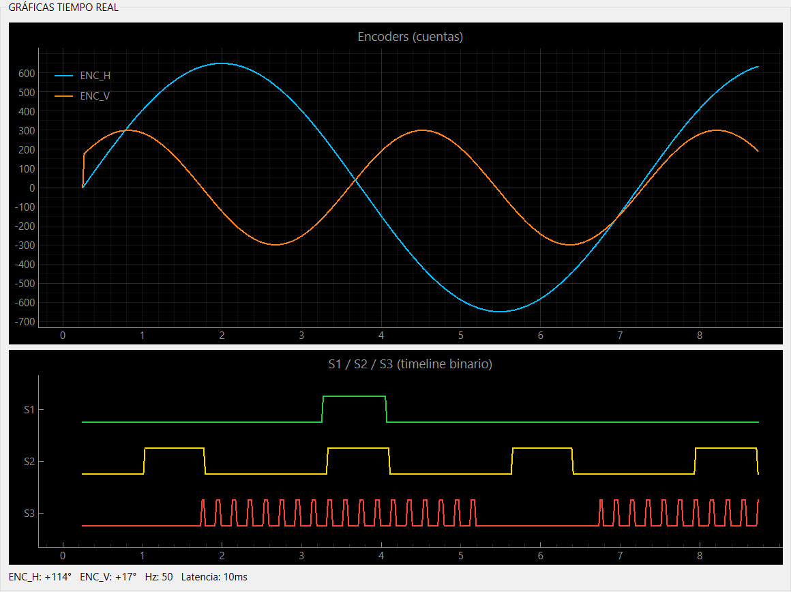
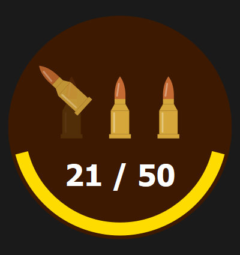
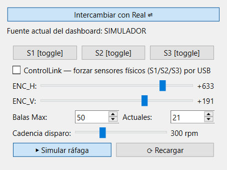
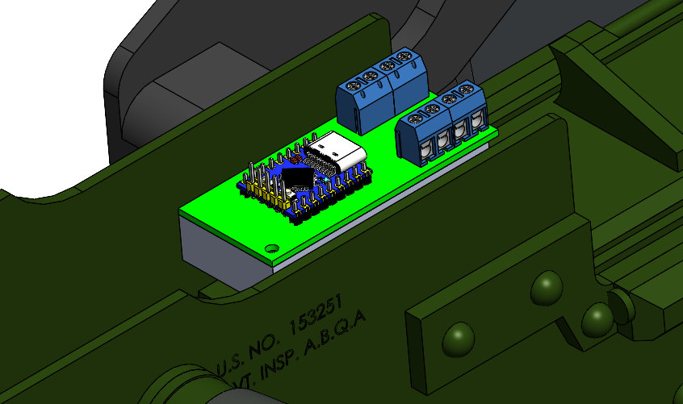
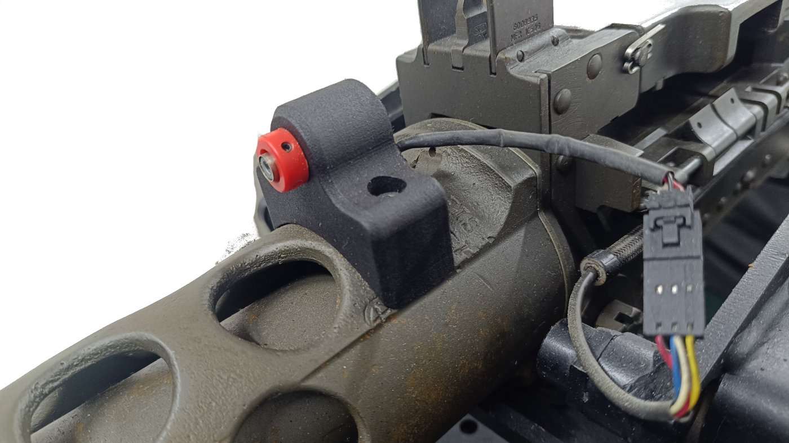

Descripción del Proyecto
Versión optimizada del sistema de adquisición de datos del mímico del arma M2.50, desarrollada para la Armada a través de TECNALIA junto a ONIRIS-ID. Parte del proyecto M2.50 DAQ-UI y elimina lo que no era esencial: WiFi, servidor WebSocket/HTTP, interfaz web e IMU. Conserva los sensores del ciclo de disparo (S1, S2 y S3), los dos encoders, la electroválvula y el control USB HID, en un firmware MicroPython para ESP32-S3. Como novedad, agrega un ESP32-C3 con pantalla redonda GC9A01 que recibe el conteo de balas por ESPNow, y una aplicación de escritorio en PySide6 para depuración en tiempo real con simulador integrado.
Objetivos
- Reducir el firmware a los componentes esenciales
- Mantener el control HID: encoders como mouse, disparo como clic y recarga como tecla
- Mostrar la munición restante en una pantalla montada en el arma
- Depurar y probar el sistema sin accionar el arma
Resultados
- Trama binaria de 14 bytes a 50 Hz (700 bytes/s) por USB UART
- Pantalla circular con cartuchos .50 animados y arco de color según las balas
- App con dashboard, gráficas de encoders y sensores y réplica de la pantalla C3
- Simulador intercambiable y ControlLink para forzar sensores desde la app
- LED RGB que indica cada fase de arranque y operación
Galería






